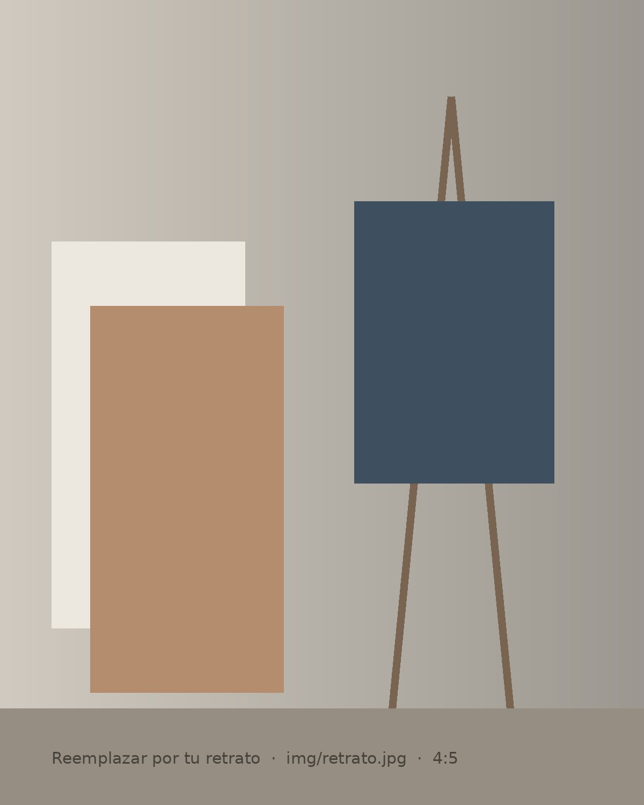

Portfolio · 2022 — 2026
Lucía Moreno, artista visual. Pintura, grabado e instalación sobre la memoria de los materiales y los espacios que habitamos.
Obras

Sobre mí
Lucía Moreno (Buenos Aires, 2001) es estudiante avanzada de la Licenciatura en Artes Visuales. Su práctica se mueve entre la pintura, el grabado y la instalación, y se centra en los rastros que el tiempo deja en los materiales y en los espacios cotidianos.
Declaración de artista
Trabajo con lo que queda: la mancha de humedad en una pared, el óxido sobre una placa de cobre, el recuerdo borroso de un rostro.
Me interesa el momento en que un material deja de ser neutro y empieza a contar su propia historia. Por eso mis procesos suelen ser lentos y acumulativos: veladuras sucesivas en la pintura, matrices expuestas a la intemperie antes de ser grabadas, dibujos hechos de memoria.
Entiendo el taller como un lugar de escucha más que de producción. Muchas de mis obras nacen de conversaciones con vecinas y vecinos, de objetos recuperados en demoliciones o de la observación repetida de un mismo lugar a lo largo de meses.
Intereses de investigación
CV · Trayectoria
CV completoFormación académica
-
2021 — act.
Licenciatura en Artes Visuales
Orientación Pintura y Grabado. Escuela Superior de Bellas Artes, Buenos Aires.
-
2019 — 2020
Profesorado de Dibujo (ciclo inicial)
Instituto de Artes Visuales, Buenos Aires.
Exposiciones individuales
-
2025
Umbrales
Espacio de Arte Contemporáneo del Sur, Buenos Aires. Curaduría: Nombre Apellido.
-
2024
Cartografía de lo que queda
Centro Cultural Barrial, Buenos Aires.
Exposiciones colectivas
-
2025
Materia prima
Galería Norte, Rosario.
-
2024
Salón de Artes Visuales para Jóvenes Artistas
Museo Municipal de Bellas Artes. Obra seleccionada.
-
2023
Muestra anual de estudiantes
Escuela Superior de Bellas Artes, Buenos Aires.
Talleres, clínicas y residencias
-
2025
Residencia de producción
Programa de residencias en taller de grabado, Córdoba (4 semanas).
-
2024
Clínica de obra
Seguimiento de proyectos con Nombre Apellido (6 meses).
-
2023
Taller de grabado no tóxico
Taller Abierto de Gráfica, Buenos Aires.
Premios, becas y menciones
-
2025
Beca de creación para artistas emergentes
Fondo de las Artes (convocatoria regional).
-
2024
Mención del jurado — Grabado
Salón de Artes Visuales para Jóvenes Artistas.
Publicaciones y prensa
-
2025
Catálogo Umbrales
Texto curatorial de Nombre Apellido. Edición de 200 ejemplares.
-
2024
“Mapas de lo que ya no está”
Entrevista en revista cultural digital. Leer ↗
Contacto
Para exposiciones, residencias, convocatorias, adquisición de obra o colaboraciones, escribime y respondo a la brevedad.